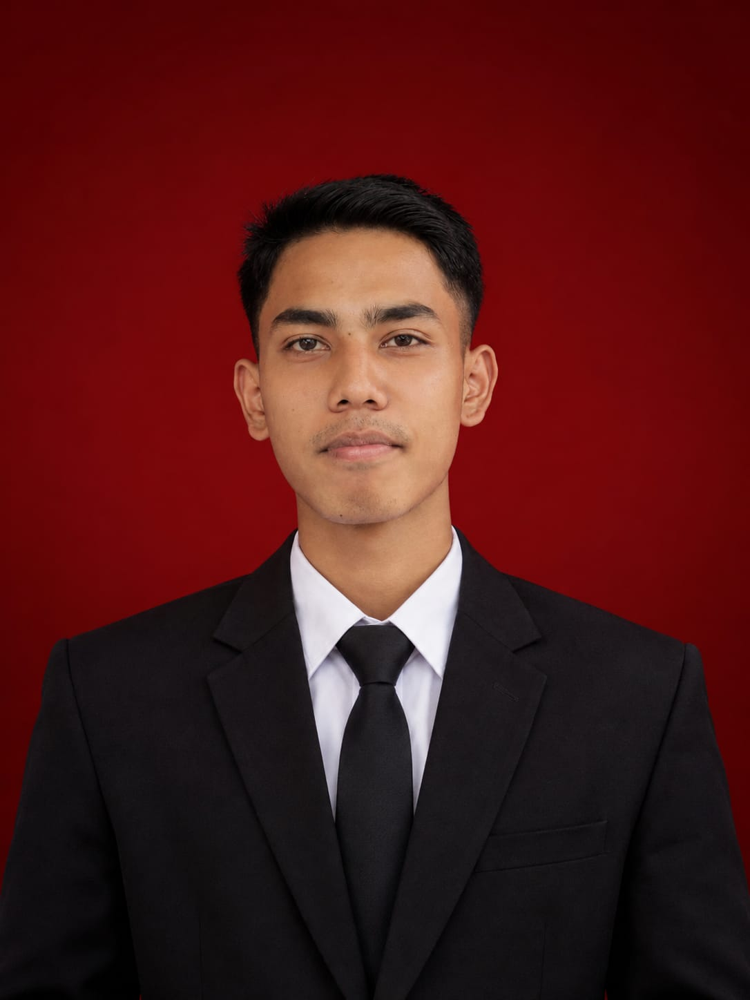

Mahir Coding
Mempelajari HTML, CSS, dan pemrograman secara bertahap.
PORTFOLIO PRIBADI · 2026
Halo, aku Pikri! Mahasiswa Sistem Informasi yang tertarik pada teknologi, kreativitas, dan bisnis digital.
Jelajahi Profilku ↘
HELLO, I'M
01 / ABOUT ME
Aku berasal dari Kecamatan Sumpur Kudus, Kabupaten Sijunjung, Sumatera Barat. Aku orang yang mudah bergaul, suka berbicara, dan senang mempelajari hal-hal baru. Aku memilih Sistem Informasi karena ingin memahami hubungan teknologi dengan kebutuhan manusia dan dunia bisnis.
02 / MY GOALS
Mempelajari HTML, CSS, dan pemrograman secara bertahap.
Mengembangkan kemampuan untuk menjadi profesional IT.
Menciptakan peluang usaha melalui teknologi digital.
03 / MY INTERESTS
04 / EDUCATION
| Tingkat | Institusi | Keterangan |
|---|---|---|
| SD | SD Negeri 15 Unggan | Lulus |
| SMP | SMP Negeri 47 Sijunjung | Lulus |
| SMK | SMK Negeri 1 Sijunjung | Lulus |
| Kuliah | STMIK EL RAHMA YOGYAKARTA | Mahasiswa |
MY LIFE MOTTO
— Satu langkah kecil setiap hari.
05 / GET IN TOUCH
Terus belajar, berbagi ide, dan bertumbuh bersama.